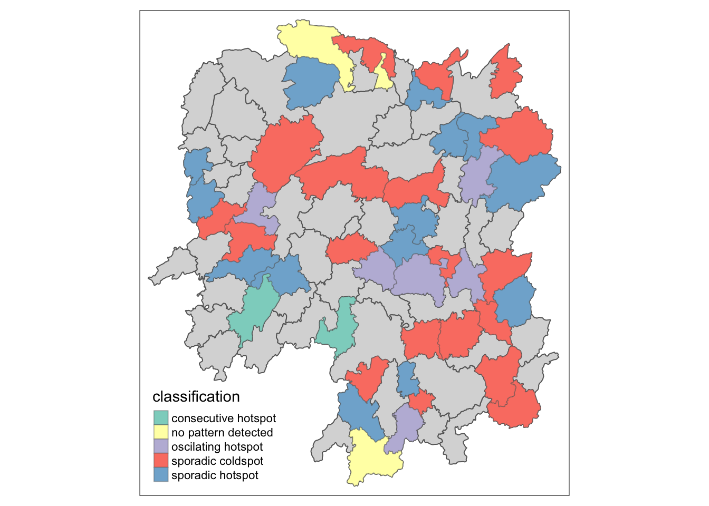

Code
pacman::p_load(sf, sfdep, tmap,
plotly, tidyverse,
Kendall)pacman::p_load(sf, sfdep, tmap,
plotly, tidyverse,
Kendall)library(spacetime)hunan <- st_read(dsn = "/Users/yuhu/Desktop/Geospatial Analytics and Applications/In-Class Ex05/In-class_Ex06/geospatial",
layer = "hunan")Reading layer `hunan' from data source
`/Users/yuhu/Desktop/Geospatial Analytics and Applications/In-Class Ex05/In-class_Ex06/geospatial'
using driver `ESRI Shapefile'
Simple feature collection with 88 features and 7 fields
Geometry type: POLYGON
Dimension: XY
Bounding box: xmin: 108.7831 ymin: 24.6342 xmax: 114.2544 ymax: 30.12812
Geodetic CRS: WGS 84GDPPC <- read_csv('/Users/yuhu/Desktop/Geospatial Analytics and Applications/In-Class Ex05/In-class_Ex06/aspatial/Hunan_GDPPC.csv')Rows: 1496 Columns: 3
── Column specification ────────────────────────────────────────────────────────
Delimiter: ","
chr (1): County
dbl (2): Year, GDPPC
ℹ Use `spec()` to retrieve the full column specification for this data.
ℹ Specify the column types or set `show_col_types = FALSE` to quiet this message.# 加载必要的包
library(dplyr)
# 创建所有县和年份的完整组合
full_data <- expand.grid(County = unique(hunan$County), # 从 hunan 数据中提取所有县的名称
Year = unique(GDPPC$Year)) # 从 GDPPC 数据中提取所有年份
# 将 GDPPC 数据合并到这个完整的组合上
# 如果某个 County 在某些 Year 上缺少 GDPPC 数据，它将会显示 NA
full_data <- left_join(full_data, GDPPC, by = c("County", "Year"))
# 检查数据的合并结果
head(full_data) County Year GDPPC
1 Anxiang 2005 8184
2 Hanshou 2005 6560
3 Jinshi 2005 9956
4 Li 2005 8394
5 Linli 2005 8850
6 Shimen 2005 9244# 填充缺失的 GDPPC 值，这里我们用 0 填补缺失值 (也可以选择用其他值)
full_data <- full_data %>%
mutate(GDPPC = ifelse(is.na(GDPPC), 0, GDPPC))
# 查看填充后的数据
head(full_data) County Year GDPPC
1 Anxiang 2005 8184
2 Hanshou 2005 6560
3 Jinshi 2005 9956
4 Li 2005 8394
5 Linli 2005 8850
6 Shimen 2005 9244# 确保所有空间单元和时间点都有数据
nrow(full_data)[1] 1496GDPPC_st <- spacetime(GDPPC, hunan,
.loc_col = "County",
.time_col = "Year")GDPPC_st <- spacetime(GDPPC, hunan,
.loc_col = "County",
.time_col = "Year")is_spacetime_cube(GDPPC_st)[1] TRUEGDPPC_nb <- GDPPC_st %>%
activate("geometry") %>%
mutate(nb = include_self(
st_contiguity(geometry)),
wt = st_inverse_distance(nb,
geometry,
scale = 1,
alpha = 1),
.before = 1) %>%
set_nbs("nb") %>%
set_wts("wt")! Polygon provided. Using point on surface.Warning: There was 1 warning in `stopifnot()`.
ℹ In argument: `wt = st_inverse_distance(nb, geometry, scale = 1, alpha = 1)`.
Caused by warning in `st_point_on_surface.sfc()`:
! st_point_on_surface may not give correct results for longitude/latitude datagi_stars <- GDPPC_nb %>%
group_by(Year) %>%
mutate(gi_star = local_gstar_perm(
GDPPC, nb, wt)) %>%
tidyr::unnest(gi_star)cbg <- gi_stars %>%
ungroup() %>%
filter(County == "Changsha") |>
select(County, Year, gi_star)
# Plot the result using ggplot2
ggplot(data = cbg,
aes(x = Year,
y = gi_star)) +
geom_line() +
theme_light()
p<-ggplot(data = cbg,
aes(x = Year,
y = gi_star)) +
geom_line() +
theme_light()
ggplotly(p)cbg %>%
summarise(mk = list(
unclass(
Kendall::MannKendall(gi_star)))) %>%
tidyr::unnest_wider(mk)# A tibble: 1 × 5
tau sl S D varS
<dbl> <dbl> <dbl> <dbl> <dbl>
1 0.485 0.00742 66 136. 589.ehsa <- gi_stars %>%
group_by(County) %>%
summarise(mk = list(
unclass(
Kendall::MannKendall(gi_star)))) %>%
tidyr::unnest_wider(mk)
head(ehsa)# A tibble: 6 × 6
County tau sl S D varS
<chr> <dbl> <dbl> <dbl> <dbl> <dbl>
1 Anhua 0.191 0.303 26 136. 589.
2 Anren -0.294 0.108 -40 136. 589.
3 Anxiang 0 1 0 136. 589.
4 Baojing -0.691 0.000128 -94 136. 589.
5 Chaling -0.0882 0.650 -12 136. 589.
6 Changning -0.750 0.0000318 -102 136. 589.ehsa <-emerging_hotspot_analysis(
x =GDPPC_st,
.var = "GDPPC",
k = 1,
nsim = 99
)ggplot (data =ehsa,
aes(x = classification)) +
geom_bar()
hunan_ehsa <- hunan %>%
left_join(ehsa,
by = join_by(County == location))
ehsa_sig <- hunan_ehsa %>%
filter(p_value < 0.05)
tmap_mode("plot")tmap mode set to plottingtm_shape(hunan_ehsa) +
tm_polygons() +
tm_borders(alpha = 0.5) +
tm_shape(ehsa_sig) +
tm_fill("classification") +
tm_borders(alpha = 0.4)Warning: One tm layer group has duplicated layer types, which are omitted. To
draw multiple layers of the same type, use multiple layer groups (i.e. specify
tm_shape prior to each of them).